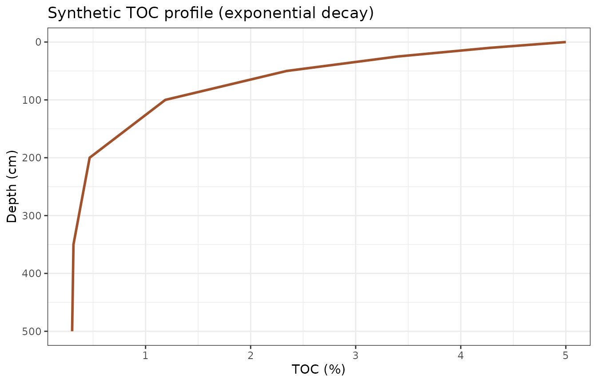
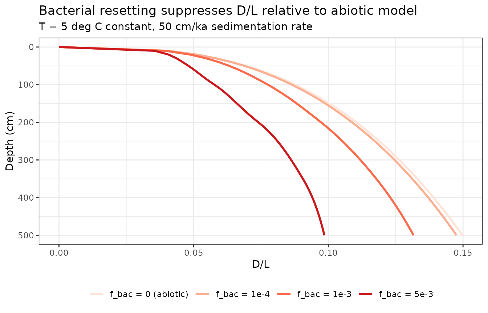
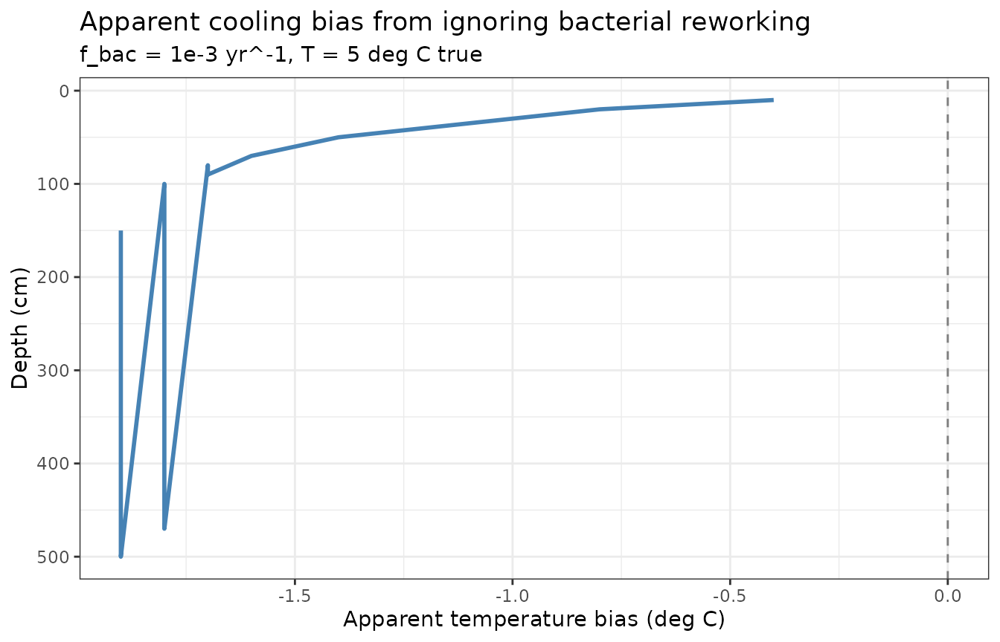
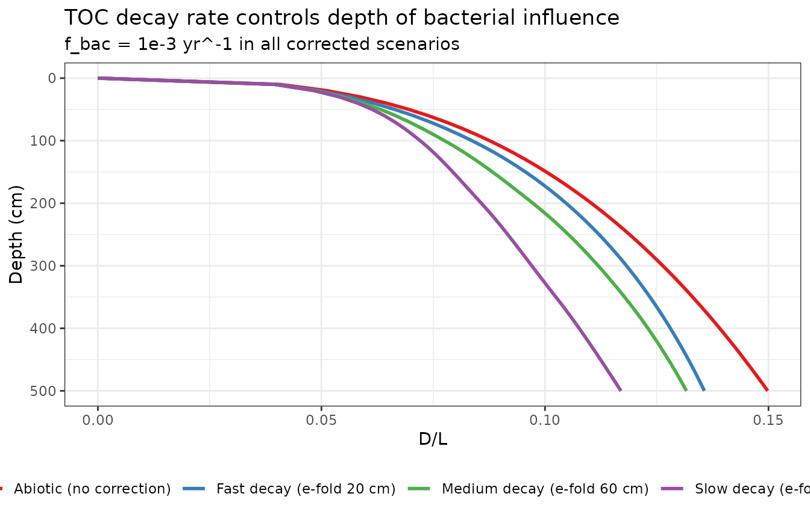

Bacterial Resetting of D/L Ratios
Source:vignettes/bacterial-correction.Rmd
bacterial-correction.RmdBiological reworking of amino acids
Braun et al. (2017) showed that bacteria in marine sediments continuously recycle amino acids: they consume D-form amino acids from necromass and synthesize new L-form amino acids, pulling D/L ratios below the values that pure abiotic racemization would predict. The magnitude of this effect scales with organic carbon availability, which decreases with depth as organic matter is degraded.
The AARP model now includes an optional bacterial resetting term. At
each integration timestep dt, the accumulated D/L in
power-law space (Rx) evolves as:
Rx(t+dt) = Rx(t)
+ dRacPL(kt, dt) # abiotic racemization
- f_bac * (TOC(z) / TOC_surface) * Rx * dt # bacterial resettingThe single free parameter f_bac (yr^-1) is the surface
resetting rate. Local TOC normalised to the surface value scales the
effect with depth: high near the surface where organic matter is
abundant; low in old, organic-depleted sediment. Based on necromass
turnover times of hundreds to thousands of years reported by Braun et
al. (2017), plausible values range from 1e-4 to 1e-2 yr^-1.
TOC profile
We build a synthetic but realistic downcore TOC profile using an exponential decay model. TOC drops steeply in the top ~50 cm, then levels off to a recalcitrant baseline:
# Exponential decay: TOC_0 = 5% at surface, asymptote ~0.3%
depths_toc <- c(0, 10, 25, 50, 100, 200, 350, 500)
toc_vals <- 0.3 + 4.7 * exp(-depths_toc / 60)
toc_fn <- make_toc_model(depth_cm = depths_toc, toc_pct = toc_vals)
data.frame(depth_cm = seq(0, 500, 5),
toc = toc_fn(seq(0, 500, 5))) |>
ggplot(aes(x = toc, y = depth_cm)) +
geom_line(colour = "sienna", linewidth = 1) +
scale_y_reverse() +
labs(x = "TOC (%)", y = "Depth (cm)",
title = "Synthetic TOC profile (exponential decay)") +
theme_bw()
Effect on D/L profiles
Compare D/L profiles for a range of f_bac values
spanning the estimates from Braun et al. (2017). All scenarios use the
same temperature (5 deg C constant) and sedimentation rate (50
cm/ka):
am <- rate_to_age_model(rate_cm_per_ka = 50, max_depth_cm = 500)
depths <- seq(0, 500, by = 10)
f_bac_vals <- c(0, 1e-4, 1e-3, 5e-3)
labels <- c("f_bac = 0 (abiotic)", "f_bac = 1e-4", "f_bac = 1e-3", "f_bac = 5e-3")
res <- lapply(seq_along(f_bac_vals), function(j) {
out <- racemize_depth_series(depths,
age_model = am,
temp_model = 5,
toc_model = toc_fn,
f_bac = f_bac_vals[j])
out$scenario <- labels[j]
out
})
do.call(rbind, res) |>
mutate(scenario = factor(scenario, levels = labels)) |>
ggplot(aes(x = DL, y = depth_cm, colour = scenario)) +
geom_line(linewidth = 1) +
scale_y_reverse() +
scale_colour_brewer(palette = "Reds") +
labs(x = "D/L", y = "Depth (cm)", colour = NULL,
title = "Bacterial resetting suppresses D/L relative to abiotic model",
subtitle = "T = 5 deg C constant, 50 cm/ka sedimentation rate") +
theme_bw() +
theme(legend.position = "bottom")
The strongest resetting occurs near the surface where TOC is highest. At depth, as TOC approaches the recalcitrant baseline, the bacterial effect diminishes and profiles converge toward the abiotic curve.
Implied temperature bias
If bacterial reworking is real but ignored during temperature reconstruction, the forward model will attribute lower-than-expected D/L to a cooler temperature rather than to biological resetting. This creates an apparent cooling bias. We can quantify this by asking: at what temperature would the abiotic model produce the same D/L profile as a bacterially corrected model at 5 deg C?
# True scenario: 5 deg C + bacterial resetting at f_bac = 1e-3
true_with_bac <- racemize_depth_series(depths, am, temp_model = 5,
toc_model = toc_fn, f_bac = 1e-3)
# Find apparent temperature (abiotic model) that minimises squared deviation
# at each depth independently, using a simple grid search
T_grid <- seq(1, 10, by = 0.1)
apparent_T <- sapply(seq_along(depths), function(di) {
target_DL <- true_with_bac$DL[di]
if (target_DL == 0) return(NA_real_)
abiotic_DL <- sapply(T_grid, function(T) {
racemize_depth_series(depths[di], am, temp_model = T)$DL
})
T_grid[which.min((abiotic_DL - target_DL)^2)]
})
bias_df <- data.frame(
depth_cm = depths,
apparent_T = apparent_T,
true_T = 5,
bias_C = apparent_T - 5
) |> filter(!is.na(apparent_T))
ggplot(bias_df, aes(x = bias_C, y = depth_cm)) +
geom_vline(xintercept = 0, linetype = "dashed", colour = "grey50") +
geom_line(colour = "steelblue", linewidth = 1) +
scale_y_reverse() +
labs(x = "Apparent temperature bias (deg C)", y = "Depth (cm)",
title = "Apparent cooling bias from ignoring bacterial reworking",
subtitle = "f_bac = 1e-3 yr^-1, T = 5 deg C true") +
theme_bw()
The bias is largest in young, shallow sediment (where TOC is high and
bacterial activity is greatest) and diminishes with depth. For
f_bac = 1e-3 yr^-1, the surface bias can reach 1-2 deg C,
while old, deep sediment converges toward the true temperature.
Sensitivity to TOC decay rate
The shape of the TOC profile matters. A faster decay (TOC drops quickly to background) concentrates the bacterial effect near the surface. A slower decay (gradual decline to background) produces a more uniform correction:
toc_fast <- make_toc_model(depths_toc, 0.3 + 4.7 * exp(-depths_toc / 20))
toc_slow <- make_toc_model(depths_toc, 0.3 + 4.7 * exp(-depths_toc / 150))
scens <- list(
list(fn = toc_fast, label = "Fast decay (e-fold 20 cm)"),
list(fn = toc_fn, label = "Medium decay (e-fold 60 cm)"),
list(fn = toc_slow, label = "Slow decay (e-fold 150 cm)")
)
res2 <- lapply(scens, function(s) {
out <- racemize_depth_series(depths, am, temp_model = 5,
toc_model = s$fn, f_bac = 1e-3)
out$scenario <- s$label
out
})
abiotic <- racemize_depth_series(depths, am, temp_model = 5)
abiotic$scenario <- "Abiotic (no correction)"
bind_rows(do.call(rbind, res2), abiotic) |>
mutate(scenario = factor(scenario,
levels = c("Abiotic (no correction)", "Fast decay (e-fold 20 cm)",
"Medium decay (e-fold 60 cm)", "Slow decay (e-fold 150 cm)"))) |>
ggplot(aes(x = DL, y = depth_cm, colour = scenario)) +
geom_line(linewidth = 1) +
scale_y_reverse() +
scale_colour_brewer(palette = "Set1") +
labs(x = "D/L", y = "Depth (cm)", colour = NULL,
title = "TOC decay rate controls depth of bacterial influence",
subtitle = "f_bac = 1e-3 yr^-1 in all corrected scenarios") +
theme_bw() +
theme(legend.position = "bottom")
Practical guidance
If TOC data are available, construct a
toc_modelwithmake_toc_model()and run sensitivity analyses acrossf_bac = c(0, 1e-4, 1e-3, 5e-3)to bracket the plausible range of bacterial influence.Marine sediments (Braun et al. 2017 context): bacterial effects are significant, with
f_baclikely 1e-3 to 1e-2 yr^-1.Cold, oligotrophic lake sediments (low TOC, low temperature): bacterial activity is much lower. TOC < 1% and temperatures near 4 deg C suggest
f_baccloser to 1e-4 yr^-1 or smaller.Default behaviour (
f_bac = 0): pure abiotic racemization, identical to all prior results. Bacterial correction is strictly opt-in.Braun et al. (2017) note that D/L ratios in marine sediments are always lower than pure racemization predicts. In Holocene lake sediments where D/L ratios have had less time to accumulate, this bias may be relatively small compared to the temperature signal of interest, but should be checked. ```